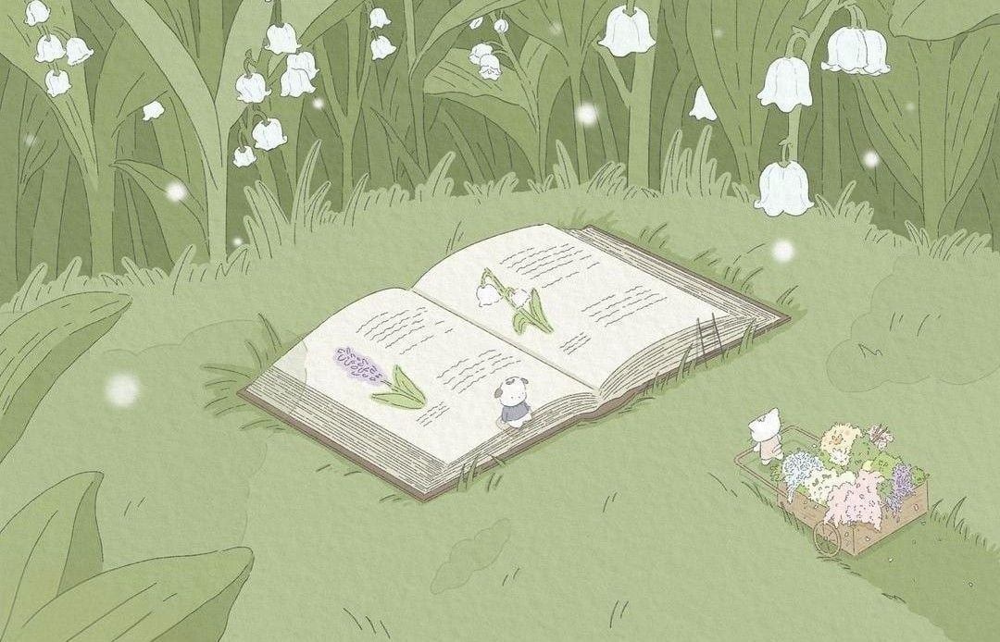
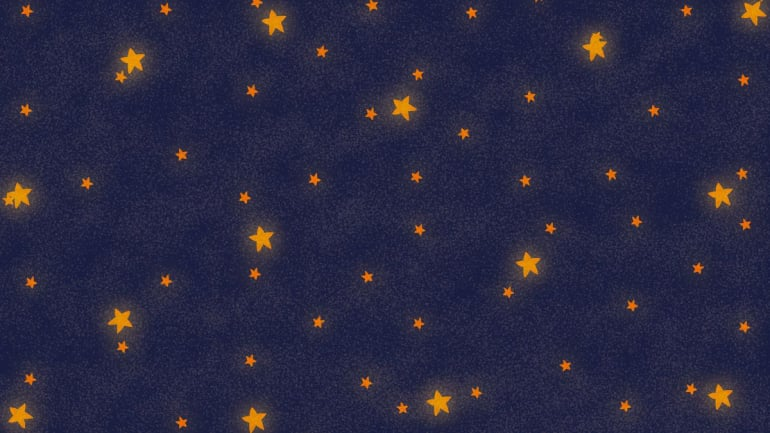
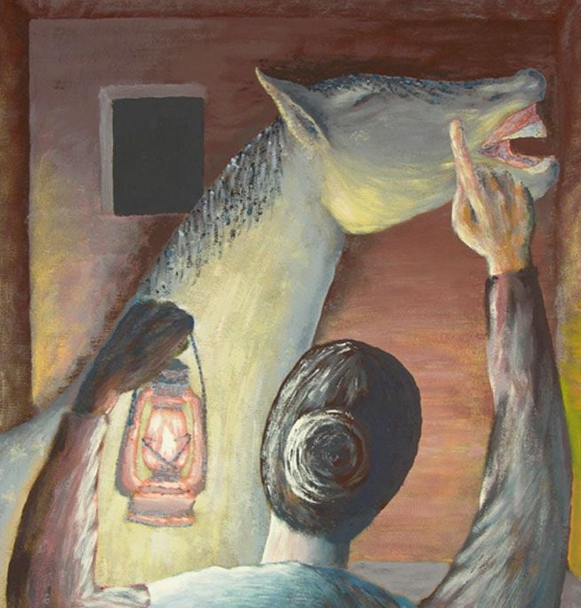
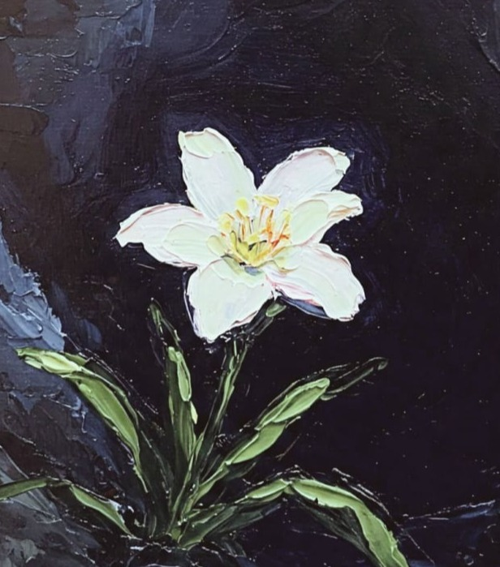

Pascoli e
la Comunicazione Alternativa e Aumentativa
Clicca sulla tua poesia preferita e inizia a leggere!
Un percorso di lettura in Comunicazione Aumentativa Alternativa, pensato per bambini e per chi li accompagna.
Il
progetto
Questo sito nasce per avvicinare la poesia di Pascoli a tutti, attraverso pittogrammi CAA, testi semplificati e strumenti digitali pensati per favorire l'inclusione.
Il progetto è stato sviluppato con Bootstrap (HTML, CSS, JS), integrando un piccolo gioco interattivo creato sulla base di un prototipo progettato su LearningApps.
Il sito è parte di un progetto universitario per il corso di Tecnologie Assistive per la Didattica dell'Università di Pisa (A.A. 25/26).
- Perché Giovanni Pascoli? Ho scelto Giovanni Pascoli perché la sua poesia parla di cose piccole, quotidiane e profonde allo stesso tempo: la casa, la notte, la nascita, la cura, l'attesa, i sentimenti. Sono temi facilmente rappresentabili attraverso immagini e simboli, elementi fondamentali nella Comunicazione Aumentativa Alternativa (CAA).
- Contenuto: le poesie selezionate sono state scelte perché hanno una struttura semplice, immagini concrete e un ritmo lento, che permette di soffermarsi sui significati senza fretta. Ogni verso può essere accompagnato da pittogrammi che aiutano a comprendere il testo, a collegare le parole alle immagini e a costruire il senso passo dopo passo.
- Design: ho usato colori neutri che non appesantiscono la vista, mentre il font del testo è Lexend, considerato uno dei font più accessibili per chi ha difficoltà nella lettura. La struttura del sito è essenziale, con poche immagini e un layout semplice.
- Zoom: lo zoom è stato introdotto come strumento di accessibilità. Ingrandire il testo e i pittogrammi permette a ciascun utente di osservare i dettagli, di scegliere il proprio tempo di lettura e di concentrarsi su ciò che è più significativo e a leggere con calma, esplorare e partecipare attivamente alla lettura.
- Gioco interattivo: dopo aver letto le poesie, l'utente può mettersi alla prova con un gioco interattivo, pensato per rafforzare la comprensione del testo e riflettere sulle emozioni che emergono dai componimenti poetici.
Scegli la poesia che vuoi leggere

La mia sera

La cavalla storna

Il gelsomino notturno
Gioco delle emozioni
Scegli la risposta giusta per ogni poesia.
Benvenutə!
Quale emozione trasmette ciascuna poesia di Giovanni Pascoli?
Clicca sulla risposta giusta!
—
Hai finito! ✨
Hai completato tutte le domande.
Contatti
Ecco dove puoi trovarmi: